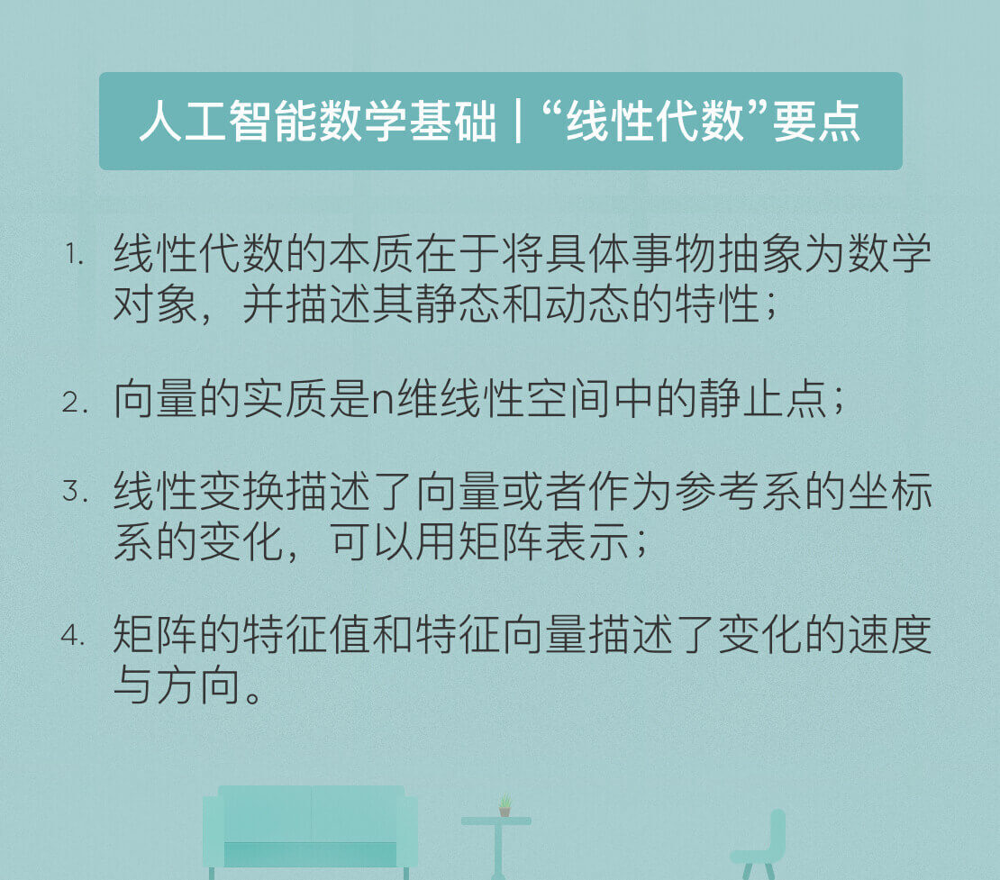

- 00 开篇词 人工智能：新时代的必修课.md.html
- 01 数学基础 九层之台，起于累土：线性代数.md.html
- 02 数学基础 月有阴晴圆缺，此事古难全：概率论.md.html
- 03 数学基础 窥一斑而知全豹：数理统计.md.html
- 04 数学基础 不畏浮云遮望眼：最优化方法.md.html
- 05 数学基础 万物皆数，信息亦然：信息论.md.html
- 06 数学基础 明日黄花迹难寻：形式逻辑.md.html
- 07 机器学习 数山有路，学海无涯：机器学习概论.md.html
- 08 机器学习 简约而不简单：线性回归.md.html
- 09 机器学习 大道至简：朴素贝叶斯方法.md.html
- 10 机器学习 衍化至繁：逻辑回归.md.html
- 11 机器学习 步步为营，有章可循：决策树.md.html
- 12 机器学习 穷则变，变则通：支持向量机.md.html
- 13 机器学习 三个臭皮匠，赛过诸葛亮：集成学习.md.html
- 14 机器学习 物以类聚，人以群分：聚类分析.md.html
- 15 机器学习 好钢用在刀刃上：降维学习.md.html
- 16 人工神经网络 道法自然，久藏玄冥：神经网络的生理学背景.md.html
- 17 人工神经网络 一个青年才俊的意外死亡：神经元与感知器.md.html
- 18 人工神经网络 左手信号，右手误差：多层感知器.md.html
- 19 人工神经网络 各人自扫门前雪：径向基函数神经网络.md.html
- 20 人工神经网络 看不见的手：自组织特征映射.md.html
- 21 人工神经网络 水无至清，人莫至察：模糊神经网络.md.html
- 22 深度学习 空山鸣响，静水流深：深度学习概述.md.html
- 23 深度学习 前方有路，未来可期：深度前馈网络.md.html
- 24 深度学习 小树不修不直溜：深度学习中的正则化.md.html
- 25 深度学习 玉不琢不成器：深度学习中的优化.md.html
- 26 深度学习 空竹里的秘密：自编码器.md.html
- 27 深度学习 困知勉行者勇：深度强化学习.md.html
- 28 深度学习框架下的神经网络 枯木逢春：深度信念网络.md.html
- 29 深度学习框架下的神经网络 见微知著：卷积神经网络.md.html
- 30 深度学习框架下的神经网络 昨日重现：循环神经网络.md.html
- 31 深度学习框架下的神经网络 左右互搏：生成式对抗网络.md.html
- 32 深度学习框架下的神经网络 三重门：长短期记忆网络.md.html
- 33 深度学习之外的人工智能 一图胜千言：概率图模型.md.html
- 34 深度学习之外的人工智能 乌合之众的逆袭：集群智能.md.html
- 35 深度学习之外的人工智能 授人以鱼不如授人以渔：迁移学习.md.html
- 36 深度学习之外的人工智能 滴水藏海：知识图谱.md.html
- 37 应用场景 你是我的眼：计算机视觉.md.html
- 38 应用场景 嘿, Siri：语音处理.md.html
- 39 应用场景 心有灵犀一点通：对话系统.md.html
- 40 应用场景 数字巴别塔：机器翻译.md.html
- 一键到达 人工神经网络复习课.md.html
- 一键到达 应用场景复习课.md.html
- 一键到达 数学基础复习课.md.html
- 一键到达 机器学习复习课.md.html
- 一键到达 深度学习之外的人工智能复习课.md.html
- 一键到达 深度学习复习课.md.html
- 一键到达 深度学习框架下的神经网络复习课.md.html
- 推荐阅读 我与人工智能的故事.md.html
- 新书 《裂变：秒懂人工智能的基础课》.md.html
- 直播回顾 机器学习必备的数学基础.md.html
- 第2季回归 这次我们来聊聊机器学习.md.html
- 结课 溯洄从之，道阻且长.md.html
- 课外谈 “人工智能基础课”之二三闲话.md.html
- （课外辅导）人工神经网络 拓展阅读参考书.md.html
- （课外辅导）数学基础 拓展阅读参考书.md.html
- （课外辅导）机器学习 拓展阅读参考书.md.html
- （课外辅导）深度学习 拓展阅读参考书.md.html
- 捐赠
01 数学基础 九层之台，起于累土：线性代数
“人工智能基础课”将从数学基础开始。必备的数学知识是理解人工智能不可或缺的要素，今天的种种人工智能技术归根到底都建立在数学模型之上，而这些数学模型又都离不开线性代数（linear algebra）的理论框架。
事实上，线性代数不仅仅是人工智能的基础，更是现代数学和以现代数学作为主要分析方法的众多学科的基础。从量子力学到图像处理都离不开向量和矩阵的使用。而在向量和矩阵背后，线性代数的核心意义在于提供了⼀种看待世界的抽象视角：万事万物都可以被抽象成某些特征的组合，并在由预置规则定义的框架之下以静态和动态的方式加以观察。
线性代数中最基本的概念是集合（set）。在数学上，集合的定义是由某些特定对象汇总而成的集体。集合中的元素通常会具有某些共性，因而可以用这些共性来表示。对于集合 { 苹果，橘子，梨 } 来说， 所有元素的共性是它们都是水果；对于集合 {牛，马，羊} 来说，所有元素的共性是它们都是动物。当然 { 苹果，牛 } 也可以构成一个集合，但这两个元素并没有明显的共性，这样的集合在解决实际问题中的作用也就相当有限。
“苹果”或是“牛”这样的具体概念显然超出了数学的处理范围，因而集合的元素需要进行进一步的抽象——用数字或符号来表示。如此一来，集合的元素既可以是单个的数字或符号，也可以是多个数字或符号以某种方式排列形成的组合。
在线性代数中，由单独的数a构成的元素被称为标量（scalar）：一个标量a可以是整数、实数或复数。如果多个标量\({ a_1, a_2, \\cdots, a_n}\) 按一定顺序组成一个序列，这样的元素就被称为向量（vector）。显然，向量可以看作标量的扩展。原始的一个数被替代为一组数，从而带来了维度的增加，给定表示索引的下标才能唯一地确定向量中的元素。
每个向量都由若干标量构成，如果将向量的所有标量都替换成相同规格的向量，得到的就是如下的矩阵（matrix）:
\[\\left( {\\begin{array}{cc}- {{a_{11}}}&{{a_{12}}}&{{a_{13}}}\\cr- {{a_{21}}}&{{a_{22}}}&{{a_{23}}}\\cr- {{a_{31}}}&{{a_{32}}}&{{a_{33}}}- \\end{array}} \\right)\]
相对于向量，矩阵同样代表了维度的增加，矩阵中的每个元素需要使用两个索引（而非一个）确定。同理，如果将矩阵中的每个标量元素再替换为向量的话，得到的就是张量（tensor）。直观地理解，张量就是高阶的矩阵。
如果把三阶魔方的每一个小方块看作一个数，它就是个3×3×3的张量，3×3的矩阵则恰是这个魔方的一个面，也就是张量的一个切片。相比于向量和矩阵，张量是更加复杂，直观性也更差的概念。
向量和矩阵不只是理论上的分析工具，也是计算机工作的基础条件。人类能够感知连续变化的大千世界，可计算机只能处理离散取值的二进制信息，因而来自模拟世界的信号必须在定义域和值域上同时进行数字化，才能被计算机存储和处理。从这个角度看，线性代数是用虚拟数字世界表示真实物理世界的工具。
在计算机存储中，标量占据的是零维数组；向量占据的是一维数组，例如语音信号；矩阵占据的是二维数组，例如灰度图像；张量占据的是三维乃至更高维度的数组，例如RGB图像和视频。
描述作为数学对象的向量需要有特定的数学语言，范数和内积就是代表。范数（norm）是对单个向量大小的度量，描述的是向量自身的性质，其作用是将向量映射为一个非负的数值。通用的\(L ^ p\)范数定义如下：
\[{\\left| {\\bf{x}} \\right|_p} = {\\left( {\\sum\\limits_i {{{\\left| {{x_i}} \\right|}^p}} } \\right)^{\\frac{1}{p}}}\]
对⼀个给定向量，\(L ^ 1\)范数计算的是向量所有元素绝对值的和，\(L ^ 2\)范数计算的是通常意义上的向量长度，\(L ^ {\\infty}\)范数计算的则是向量中最大元素的取值。
范数计算的是单个向量的尺度，内积（inner product）计算的则是两个向量之间的关系。两个相同维数向量内积的表达式为
\[\\left\\langle {{\\bf{x,y}}} \\right\\rangle = \\sum\\limits_i {{x_i} \\cdot {y_i}} \]
即对应元素乘积的求和。内积能够表示两个向量之间的相对位置，即向量之间的夹角。一种特殊的情况是内积为0，即\(\\left\\langle \\bf{x,y} \\right\\rangle = 0\)。在二维空间上，这意味着两个向量的夹角为90度，即相互垂直。而在高维空间上，这种关系被称为正交（orthogonality）。如果两个向量正交，说明他们线性无关，相互独立，互不影响。
在实际问题中，向量的意义不仅是某些数字的组合，更可能是某些对象或某些行为的特征。范数和内积能够处理这些表示特征的数学模型，进而提取出原始对象或原始行为中的隐含关系。
如果有一个集合，它的元素都是具有相同维数的向量（可以是有限个或无限个）， 并且定义了加法和数乘等结构化的运算，这样的集合就被称为线性空间（linear space），定义了内积运算的线性空间则被称为内积空间（inner product space）。在线性空间中，任意一个向量代表的都是n维空间中的一个点；反过来， 空间中的任意点也都可以唯一地用一个向量表示。两者相互等效。
在线性空间上点和向量的相互映射中，一个关键问题是参考系的选取。在现实生活中，只要给定经度、纬度和海拔高度，就可以唯一地确定地球上的任何一个位置，因而经度值、纬度值、高度值构成的三维向量(x, y, h)就对应了三维物理空间中的⼀个点。
可是在直觉无法感受的高维空间中，坐标系的定义可就没有这么直观了。要知道，人工神经网络要处理的通常是数以万计的特征，对应着维度同样数以万计的复杂空间，这时就需要正交基的概念了。
在内积空间中，一组两两正交的向量构成这个空间的正交基（orthogonal basis），假若正交基中基向量的\(L ^ 2\)范数都是单位长度1，这组正交基就是标准正交基（orthonormal basis）。正交基的作用就是给内积空间定义出经纬度。⼀旦描述内积空间的正交基确定了，向量和点之间的对应关系也就随之确定。
值得注意的是，描述内积空间的正交基并不唯一。对二维空间来说，平面直角坐标系和极坐标系就对应了两组不同的正交基，也代表了两种实用的描述方式。
线性空间的一个重要特征是能够承载变化。当作为参考系的标准正交基确定后，空间中的点就可以用向量表示。当这个点从一个位置移动到另一个位置时，描述它的向量也会发生改变。点的变化对应着向量的线性变换（linear transformation），而描述对象变化抑或向量变换的数学语言，正是矩阵。
在线性空间中，变化的实现有两种方式：一是点本身的变化，二是参考系的变化。在第一种方式中，使某个点发生变化的方法是用代表变化的矩阵乘以代表对象的向量。可是反过来，如果保持点不变，而是换一种观察的角度，得到的也将是不同的结果，正所谓“横看成岭侧成峰，远近高低各不同”。
在这种情况下，矩阵的作用就是对正交基进行变换。因此，对于矩阵和向量的相乘，就存在不同的解读方式：
\[{\\bf{Ax = y}}\]
这个表达式既可以理解为向量x经过矩阵A所描述的变换，变成了向量y；也可以理解为一个对象在坐标系A的度量下得到的结果为向量x，在标准坐标系 I（单位矩阵：主对角线元素为1，其余元素为0）的度量下得到的结果为向量y。
这表示矩阵不仅能够描述变化，也可以描述参考系本身。引用网络上一个精当的类比：表达式Ax就相当于对向量x做了一个环境声明，用于度量它的参考系是A。如果想用其他的参考系做度量的话，就要重新声明。而对坐标系施加变换的方法，就是让表示原始坐标系的矩阵与表示变换的矩阵相乘。
描述矩阵的⼀对重要参数是特征值（eigenvalue）和特征向量（eigenvector）。对于给定的矩阵A，假设其特征值为λ，特征向量为x，则它们之间的关系如下：
\[{\\bf{Ax}} = \\lambda {\\bf{x}}\]
正如前文所述，矩阵代表了向量的变换，其效果通常是对原始向量同时施加方向变化和尺度变化。可对于有些特殊的向量，矩阵的作用只有尺度变化而没有方向变化，也就是只有伸缩的效果而没有旋转的效果。对于给定的矩阵来说，这类特殊的向量就是矩阵的特征向量，特征向量的尺度变化系数就是特征值。
矩阵特征值和特征向量的动态意义在于表示了变化的速度和方向。如果把矩阵所代表的变化看作奔跑的人，那么矩阵的特征值就代表了他奔跑的速度，特征向量代表了他奔跑的方向。但矩阵可不是普通人，它是三头六臂的哪吒，他的不同分身以不同速度（特征值）在不同方向（特征向量）上奔跑，所有分身的运动叠加在⼀起才是矩阵的效果。
求解给定矩阵的特征值和特征向量的过程叫做特征值分解，但能够进行特征值分解的矩阵必须是n维方阵。将特征值分解算法推广到所有矩阵之上，就是更加通用的奇异值分解。
今天我和你分享了人工智能必备的线性代数基础，着重于抽象概念的解释而非具体的数学公式，其要点如下：
- 线性代数的本质在于将具体事物抽象为数学对象，并描述其静态和动态的特性；
- 向量的实质是n维线性空间中的静止点；
- 线性变换描述了向量或者作为参考系的坐标系的变化，可以用矩阵表示；
- 矩阵的特征值和特征向量描述了变化的速度与方向。
线性代数之于人工智能如同加法之于高等数学。这样一个基础的工具集，你能想到它在人工智能中的哪些具体应用呢？
欢迎发表你的观点。

© 2019 - 2023 Liangliang Lee. Powered by gin and hexo-theme-book.